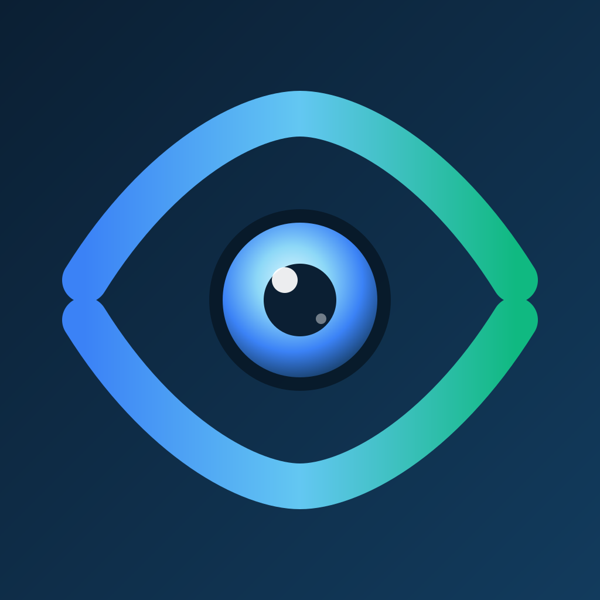

Spot camera glasses. On your terms.
Camera glasses announce themselves over Bluetooth. LensBeacon listens for those announcements and tells you when a known pair — Ray-Ban Meta, Oakley Meta, Snap Spectacles — is nearby, with the evidence behind every flag.
Join the TestFlight beta →Free · optional one-time Unlock $9.99 · no subscription, ever · coming to the App Store
Most “detector” apps flash a red alert and let you assume the worst. LensBeacon does one honest thing: it reads the advertisements camera glasses broadcast in the open, matches them against a small, sourced signature table, and shows you exactly what matched so you can disagree with it.
No account, no server, no analytics, zero network requests. Put the phone in Airplane Mode — every feature still works.
Every flag lists which advertising field matched, the raw bytes on the wire, and the confidence tier. See why, and say if it’s wrong.
A manufacturer signature is High confidence. A name alone is Low, and never interrupts you. Colour is never the only cue.
Display-only glasses like Even Realities are labelled “no camera” and never counted as one.
A Meta Quest or Apple Vision Pro is camera-capable but worn openly. LensBeacon lists it for what it is — never a covert-camera flag.
Own a pair? Mark them and they stop raising alerts — keyed to the signature, so it survives Bluetooth address rotation and a relaunch.
A Control Centre control, a “scan for camera glasses” Siri phrase, a Lock Screen Live Activity, a Home Screen widget, and an Apple Watch app.
A passive listen — LensBeacon never connects, pairs, or transmits to anything.
Every Bluetooth device broadcasts small packets to any nearby phone. LensBeacon reads only those — the manufacturer identifier, a service UUID, the advertised name.
A short, versioned rule table maps those fields to a product and a confidence tier. Shared identifiers — the ones a Quest and Meta glasses both use — can’t stand alone as a flag.
Each flag opens to the exact fields that matched, the raw bytes, and the rule — so you can judge it, not just trust it.
Your log of recognised glasses lives only on this iPhone, encrypted at rest. One tap in Settings erases all of it. There is no cloud copy.
Two screens. That’s the whole app.
A calm status line, then the flagged glasses — each a single row with a confidence tier and a three-bar proximity meter. Name-only matches, display glasses, and headsets worn openly are tucked into one “seen, not flagged” group. No full-bleed red, no siren.
Which advertising field matched, the value, the raw bytes on the wire, the rule, and whether it’s a High, Medium or Low signal. Read it, and turn it off if you disagree.
A log of recognised glasses only, newest first. The anonymous phones and tags LensBeacon also hears are shown live on Nearby — never written down. One tap in Settings erases the lot.
Screenshots go up when the TestFlight build is live.
Not “we’ll tell you who’s recording.” We can’t, and neither can anyone else. What LensBeacon actually does:
A detection is not proof that anyone is recording, and quiet is not proof that no one is. Most camera glasses keep broadcasting while worn, so they’re usually detectable — but a few standalone models can stay silent.
The subject of LensBeacon is a device announcing itself publicly to any nearby phone — never a person, and never their behaviour. Signal strength gives a rough sense of distance only.
LensBeacon is in private testing ahead of the App Store. BLE scanning needs a real iPhone on iOS 18 or later.
Join the TestFlight beta →